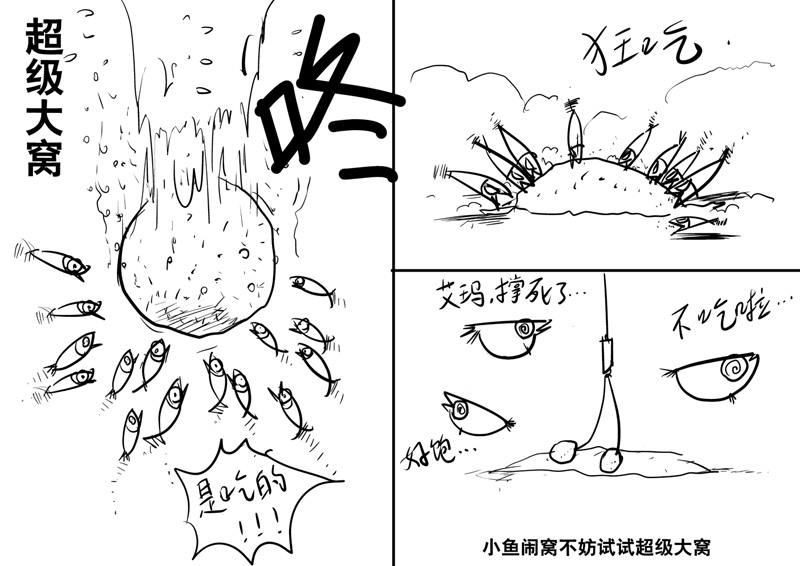
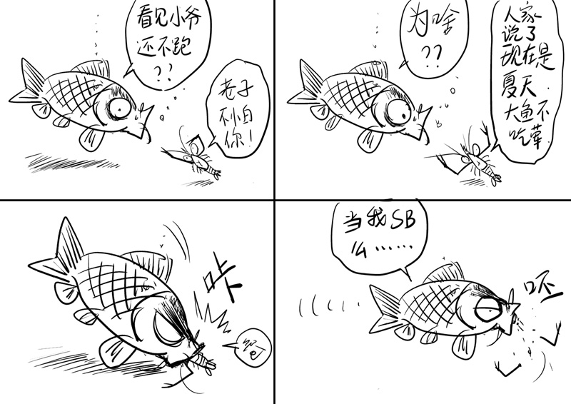

长期不钓鱼的危害
长期不钓鱼的危害非常大。长期不钓鱼，脾气暴躁影响家庭和睦。钓鱼是非常好的解压方式，工作累了，压力大了，到水边钓鱼，和大自然亲密接触是解压的非常好的方式。要是长期不钓鱼，压力，暴躁都会聚集在一起，很容易会爆发出来。或者压抑到身体不适。
从零开始学钓鱼
首先从材质来说，钓竿有玻璃钢的，有碳素的，也有竹子的。现在大部分钓竿都是碳素的。碳素杆是碳布卷起来的，好多厂商都会标注碳含量，比如40T、60T等，我们在购买钓竿的时候不要被迷惑，如果一两百的杆还标了60t或者80t的，那肯定是虚标的了！一般来说含碳越高杆越硬越轻，价格肯定也不便宜，但是同样也越脆，所以新手比较适合含碳低的。 玻璃钢的比较重，但是不容易断。而竹子的就是竹子加工而成的，动手能力强的大神们比较喜欢的……
鱼钩种类繁多，不过常见常用的就这么几种。鱼钩主要分为有倒刺和没有倒刺两种。我一般都用无倒刺的钩，对鱼伤害小，最主要的是怕万一钩到自己，你懂得......用虫饵的话，最好是用有倒刺的钩，不会掉落。常用钩型有伊势尼、伊豆、袖、海夕、新关东（其中袖和新关东是无倒刺的）。以袖钩为例：比如钓白条，就用1~2号；钓小鲫鱼用3~4号；大鲫鱼可用5~7号 因为袖钩钩条比较细，不适合钓大体型的鱼，所以如果是钓大鱼或者混养，最好用新关东新关东1号。如果是钓10斤以上大青或者更大的，那最好就用伊势尼了，毕竟新关东虽然硬度不错，但毕竟钩条也不够粗，大鱼还是首选伊势尼……
???

